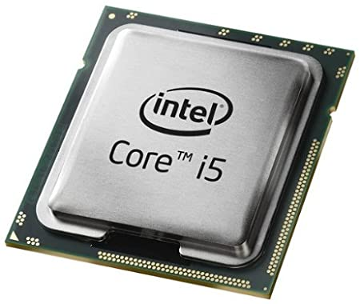

| processor | |
|
de processor ook wel bekend als de CPU is met het moederbord samen het brein van de computer
de processor zorgt evoor dat de programmacode uitgevoert word |
 |

|
de processor zit met pinnetjes vast in de socket op het moederbord
zonder de processor kan de computer natuurlijk niet werken |